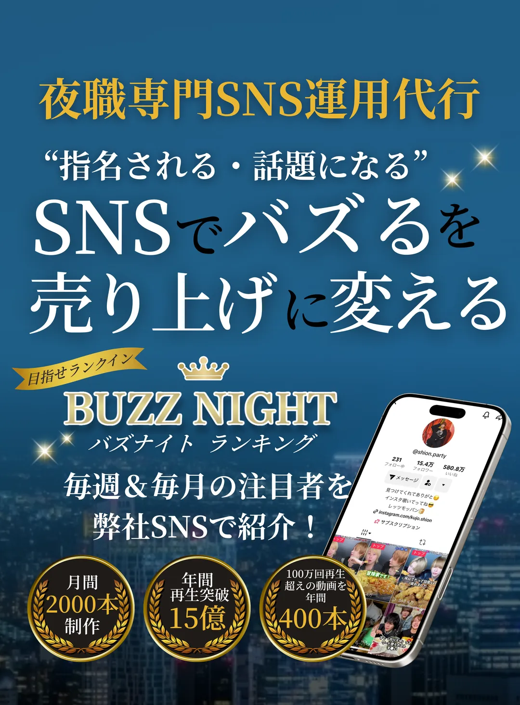
ホスト・夜職のみなさまへ
TikTokで“指名につながる”発信を。
企画から投稿まで、まるごと。
ご用意いただくものは一切不要。
まずはLINEで無料相談から。

運用開始半年で10万人達成
- アカウントは0から運用
- SNSからの集客がバズってから10倍に！
- モッパンブランディングで他業種への認知も拡大！
TikTok13.8万人
いいね670万
Instagram2.8万人
運用開始3ヶ月で
約4万人フォロワー達成
- 運用開始から2か月半で約3万人フォロワー達成
- YGD系列全店舗 TikTokからの新規指名ランキング2ヶ月連続No.1
- ホスホス（webサイト）で検索ランキングNo.1
TikTok11.8万人
いいね340万
Instagram10.7万人
らららちゃん
TikTok @lalalachan46
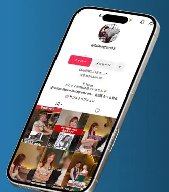
運用開始わずか1年半
総再生2500万回再生
- 上品＋おもしろ失礼キャラで、TikTokを見ての指名来店も多数
- SNSを通じて店舗集客を大幅に獲得！
TikTok18.1万人
いいね380万
Instagram30.4万人
自叙伝重版決定！
- アインズグループ2024年度年間No.1
- 自叙伝出版の様子を密着し、2度の重版までするヒット作に！
- 業界の事を広める活動動画が各SNSで大バズり
TikTok16.6万人
いいね120万
Instagram19.9万人
※フォロワー数・いいね数は2026年9月26日時点
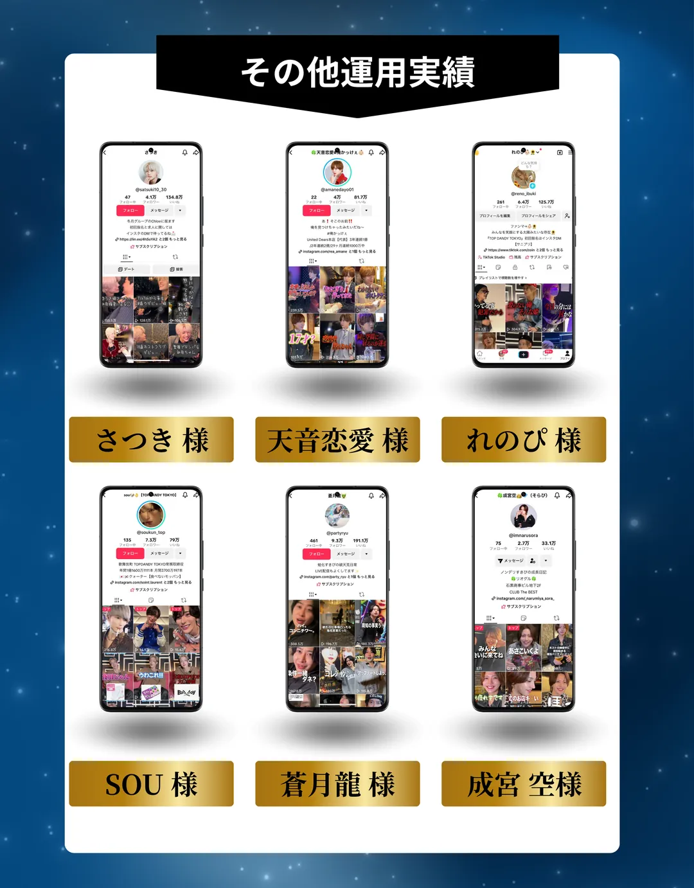
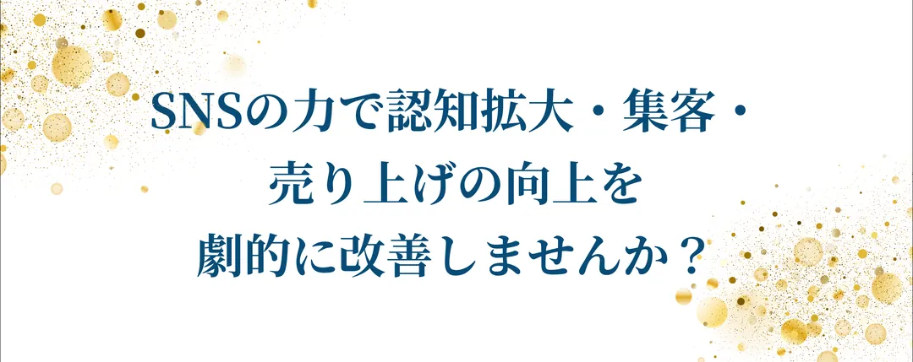
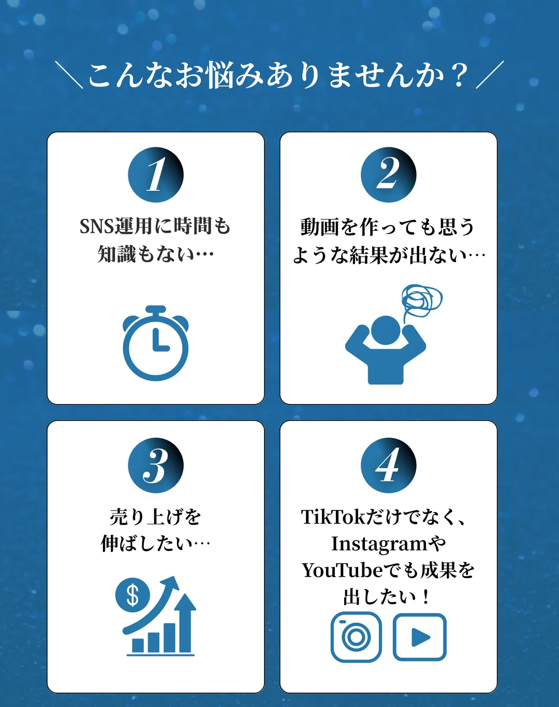
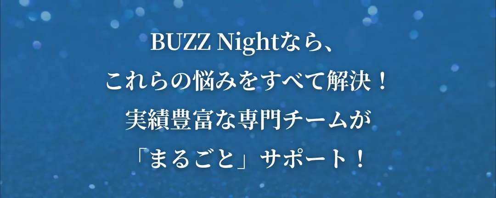
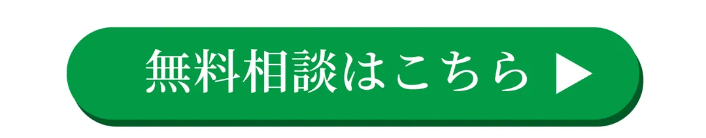
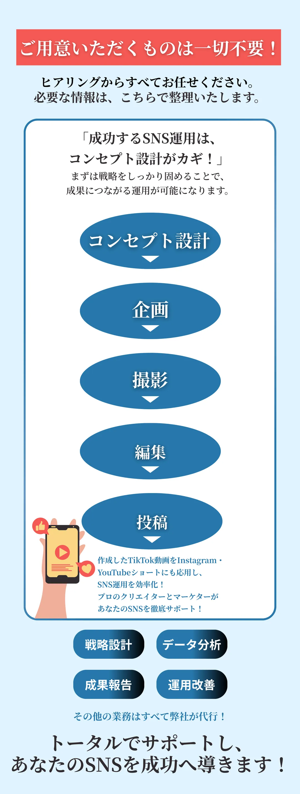
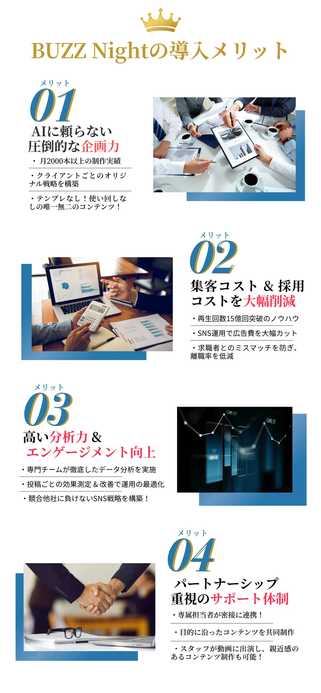
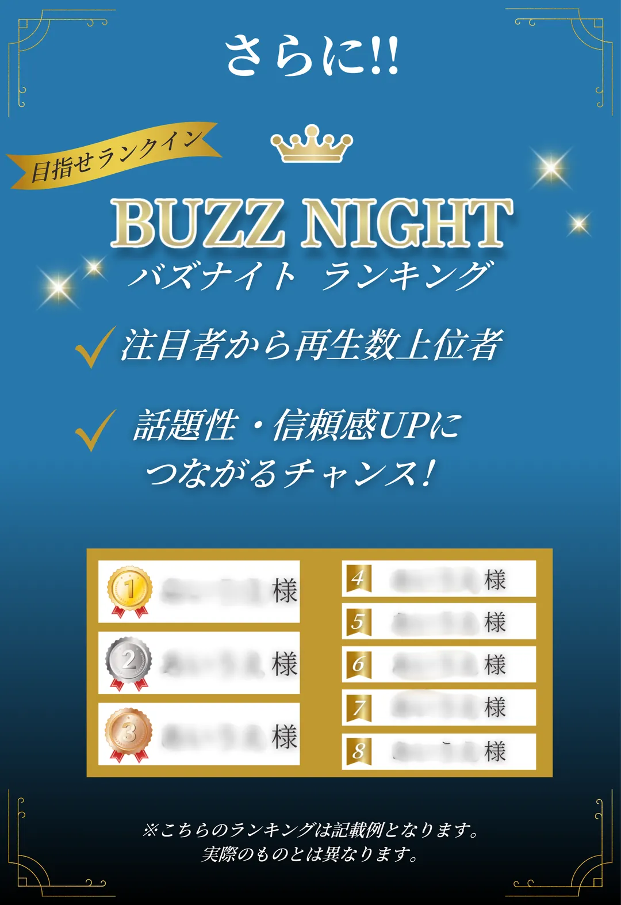
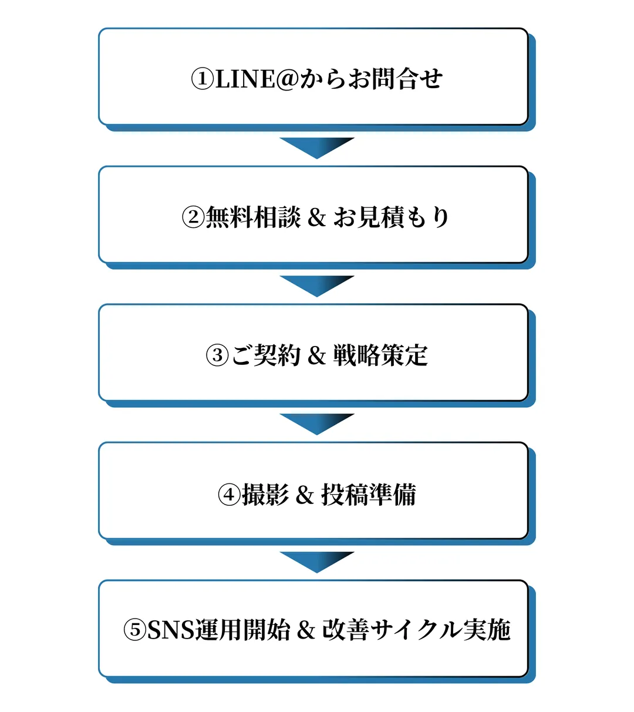
FAQ
よくある質問
相談にお金はかかりますか？
無料です。まずはLINEからお気軽にご相談ください。
何を用意すればいいですか？
ご用意いただくものは一切ありません。ヒアリングからコンセプト設計・企画・撮影・編集・投稿まで、すべてお任せいただけます。
TikTok以外にも使えますか？
はい。作成したTikTok動画は、InstagramやYouTubeショートにも活用できます。
始めるまでの流れは？
LINEでお問合せ → 無料相談＆お見積もり → ご契約＆戦略策定 → 撮影＆投稿準備 → 運用開始、の順で進みます。
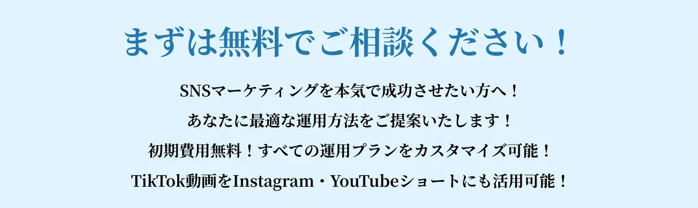